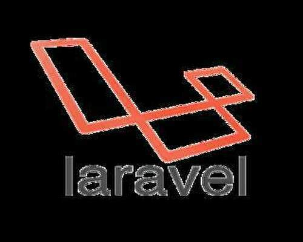

三大フレームワークの過去と未来
Laravelは私も使用しているものの、使い勝手は良い
フロントエンドの実装などは普通のHTMLとCSSで実装できるため、難易度は低い。
※但し動的セレクトボックスを実装する時は記述が自由になりすぎる
勢いは最もあるものの、どこかで勢いが止まるかわからない可能性もある
その他は・・・
Expressは環境構築程度で実際に触ったことはない。
javascriptでサーバーサイドまでをという面では勢いもありそうだが・・・今は不明
Djangoはというと元々pythonが機会学習での使用がメインであったり、どうか・・・
近年良く聞くが、フロントエンド面に関しての不安がよぎる


| Rails | Laravel | Django | Express | |
|---|---|---|---|---|
| インストール難易度 | ☆☆☆☆ | ☆☆☆ | ☆☆☆☆☆ | ☆ |
| migrationでの自動コード生成量 | ☆☆☆☆☆ | ☆☆☆ | ☆☆ | ☆☆ |
| 相性の良いデータベースツール | SQLite | SQLite | SQLite | Mysql |
| ツールVERSION競合 | 少ない | 多い | 多い | なし |
| 情報の充実度合 | ☆☆☆☆☆ | ☆☆☆ | ☆☆☆ | ☆ |
| 実際のコード記述量 | ☆ | ☆☆ | ☆☆☆ | ☆☆ |
| AWSとの相性 | ☆☆☆ | ☆☆ | ？ | ？ |
ここまで記載してきたことは悪魔でも個人的な見解です。
実際の難易度や将来性等は人の価値観によって異なります。
また、golangやkotolin等の技術の成長も期待しています。
若い世代の方々が楽しい世の中を生きていける日々を期待して
トップページへ